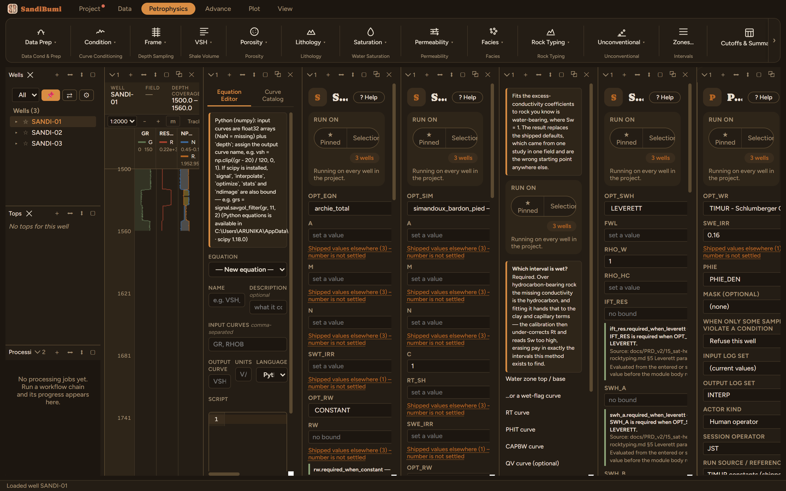

Permeability from porosity and irreducible water saturation, as four named constant sets. Before anything runs, read the pane's own documentation once — it carries an attribution record most software never admits to: two of the four constant sets wear a name their author never attached to them. TIMUR here is the Schlumberger Chart K-3 curve, not Timur's 1968 paper (whose published relation is about 14% lower in tight rock — exactly where a cutoff is decided); TIXIER is a post-1950 simplification of Wyllie-Rose, not Tixier 1949; the MORRIS_BIGGS numbers are disputed between two papers. The card keeps the trade names because that is what every vendor calls them, and the honesty note travels with the card.

On these wells: 3 clean, median 73 mD in the sands. Now put it beside the core-calibrated transform's 2.8 mD on the same samples: a factor of 25. Wyllie & Rose warned in 1950 that the result carries order-of-magnitude significance only, and this dataset demonstrates the warning. Where core exists, the published-constant families are a cross-check, not an answer — and where core does not exist, quote them with their own error bars in mind.